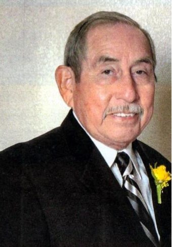
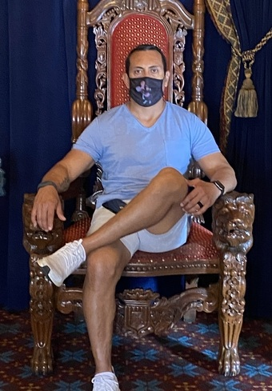

Guests of Honor
- Jesus Christ
- Joel Cavazos 
- Jesse Ceja 
The first guest of honor that came to mind was Jesus of Nazereth. I am a Christian, but have failed to live the life expected of one. While I am not deserving of his presence, it is my belief that he died for not just my sins, but the sins of the entire world. As of recently, I have been trying to turn my life around, and become a better follower for Christ. Inviting The Son of God would be incredible, though he is always with me in spirit, seeing him physically would be such an honor. If he were to arrive to this dinner, I would kneel to him and admit my wrong doings to him, as it is part of the process to becoming closer to God. I already did this in Church many times, but seeing him in person and doing this would be a truly magnificent experience.
My second guest of honor for this Dinner Invitation is Joel Cavazos. The father of my mother, also known as my Grandpa. The reason I chose my grandfather to attend this hypothetical dinner is because in 2020, he sadly passed away after an accident. I was sixteen years old when it happened, and I remeber how upset I was that day. My biggest regret in life is that I didn't spend a lot of time with him when he was alive, but I loved him so much. He was the most devot Christian man I've ever known, and wish I could be half the man he was. So if I could invite him, I could share one final memory with him, and maybe have a proper goodbye this time.
My third guest of honor for the dinner invetation would be the man who gave me my name, a nickname he had as a kid, my father. Admittedly, I chose my dad because I couldn't think of a third person who I'd want to invite. Though I spend time with my dad everyday since I still live with him, he is still a great man. He's worked hard his whole life to provide for his family, and I will owe him forever. Something I never told my dad is that he is my hero, so I can think of no one better to fill the third spot for the guests of honor.
Menu
- Appetizer-Mini Tartlets
- Main Course-Steak and Lobster
- Dessert-Chocolate Cake